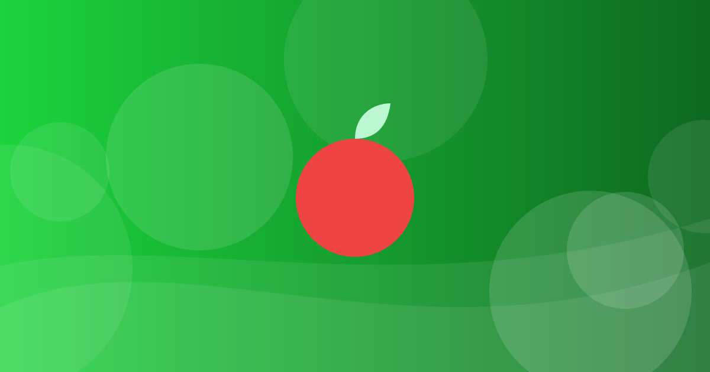

সুষম খাদ্য কী এবং কেন প্রয়োজন

বিভিন্ন খাদ্যগোষ্ঠী থেকে পরিমিত খাবার খাওয়াই সুষম খাদ্য।
লেখক: সম্পাদকীয় খসড়া (যাচাইকৃত যোগ্যতা নেই) · মেডিকেল রিভিউয়ার: এখনও নেই · প্রকাশ ও হালনাগাদের তারিখ: নির্ধারিত হয়নি · সম্পাদকীয় তথ্য
সুষম খাদ্য মানে কী
শাকসবজি, ফল, ডাল, মাছ, ডিম, শস্য ও পরিমিত তেল-চিনি-লবণ মিলিয়ে খাওয়া। WHO বলে, স্বাস্থ্যকর খাদ্য অপুষ্টি ও অনেক অসংক্রামক রোগ থেকে সুরক্ষা দিতে সাহায্য করে।
WHO-র কিছু সাধারণ নির্দেশনা
প্রতিদিন অন্তত ৪০০ গ্রাম (পাঁচ ভাগ) ফল ও সবজি; মোট শক্তির ১০%-এর কম মুক্ত চিনি (৫%-এর কম হলে আরও উপকার); দিনে ৫ গ্রামের কম লবণ; মোট শক্তির ৩০%-এর কম চর্বি।
প্লেটে বাস্তব উদাহরণ
ভাতের পাশে ডাল ও সবজি, মাঝে মাঝে মাছ বা ডিম, ভাজাপোড়া ও মিষ্টি পানীয় কম। এটি সাধারণ উদাহরণ, ব্যক্তিগত ডায়েট পরিকল্পনা নয়।
সতর্কতা
বিশেষ রোগ, গর্ভাবস্থা বা শিশুর খাদ্য নিয়ে চিকিৎসক বা পুষ্টিবিদের পরামর্শ নিন।
মূল কথা
বিভিন্ন খাদ্যগোষ্ঠী থেকে পরিমিত খাবার খাওয়াই সুষম খাদ্য। ব্যক্তিগত উপসর্গ বা চিকিৎসা নিয়ে সিদ্ধান্তের আগে চিকিৎসকের সঙ্গে কথা বলুন।
তথ্যসূত্র
- WHO: Healthy diet (প্রকাশের আগে লিংক ও তথ্য মিলিয়ে নিন)